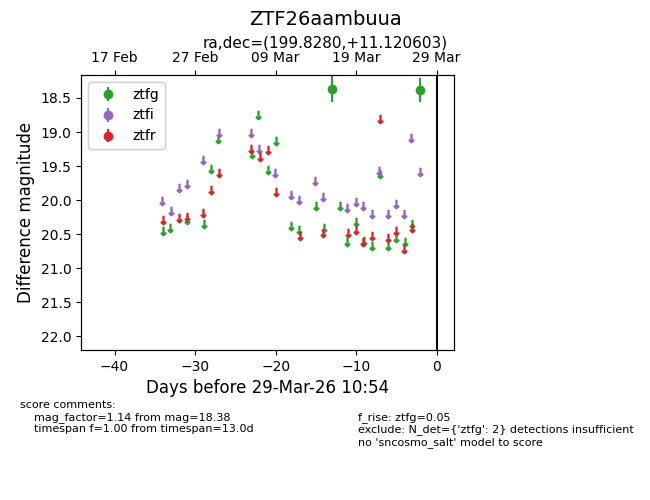
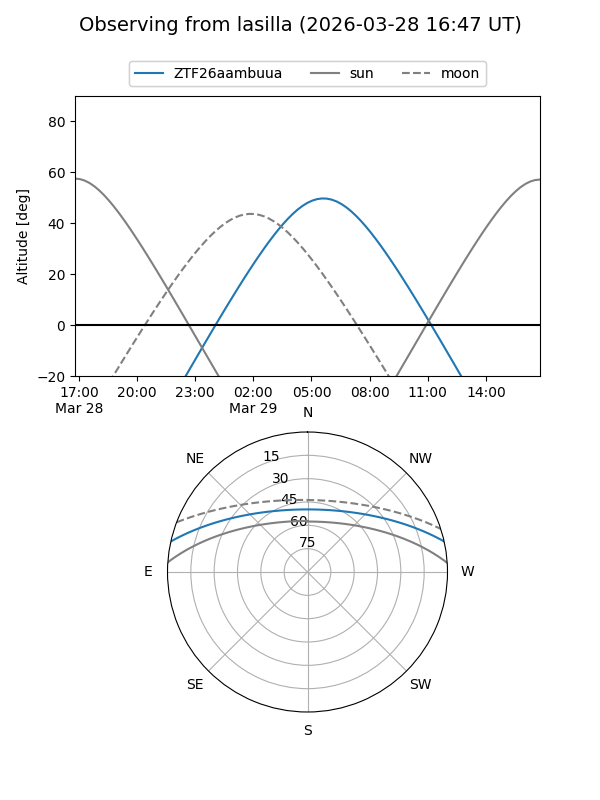
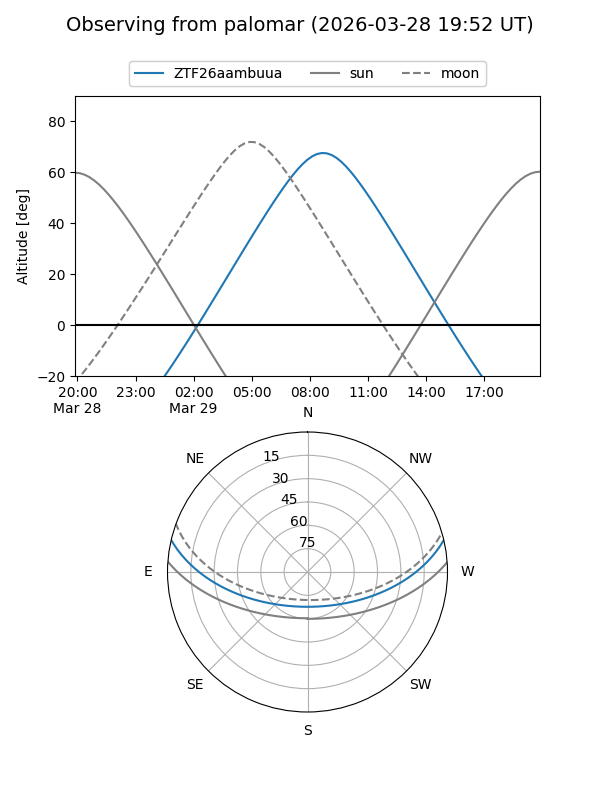

ZTF26aambuua
Target ZTF26aambuua at 2026-03-29 10:57
Aliases and brokers:
FINK: link
Lasair: link
ALeRCE: link
alt names
ZTF26aambuua (ztf,fink_ztf)
Coordinates:
equatorial (ra, dec) = 199.8280,+11.12060
equatorial (HMS+DMS) = 13:19:18.71,+11:07:14.17
galactic (l, b) = (326.5337,+72.70255)
Flags:
Photometry:
last ztfg=18.38
2 ztfg detections
Lightcurve

Visibility


Additional plots